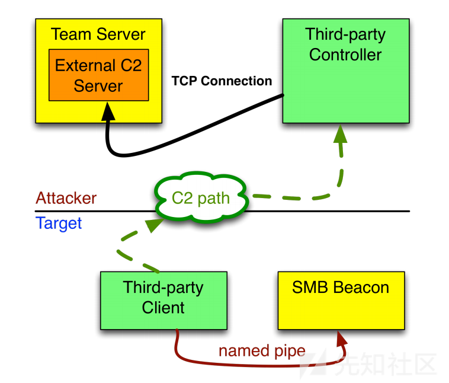
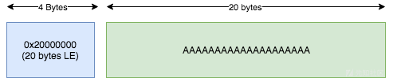
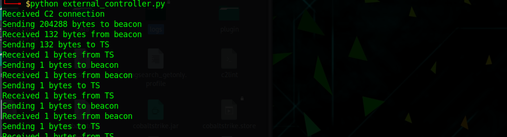
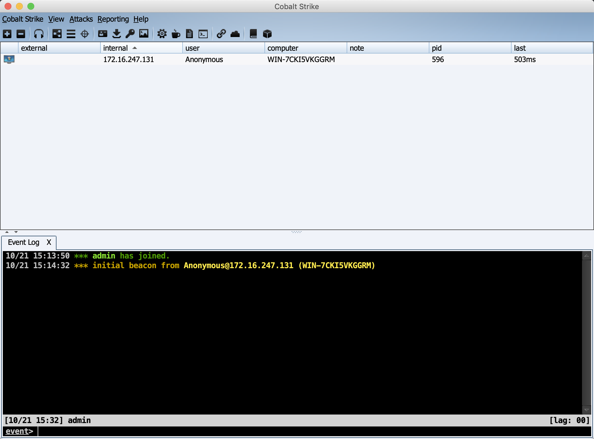
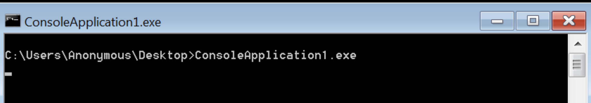
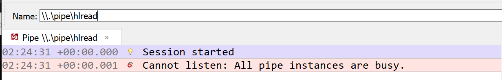

CobaltStrike External C2信道
简介
CS的扩展C2接口（Cobalt Strike External Command and Control）可以允许第三方程序作为teamserver和Beacon之间的一个额外通信层。以下简称External C2。
架构
External C2由一个第三方控制器和第三方客户端组成。架构示意图如下。

说白了就是一个代理转发的功能。
第三方控制器负责连接上CS的External C2服务、转发External C2服务提供的payload stage、转发攻击者下达的任务、Beeacon会话的相应等。
第三方服务端负责注入payload stage到内存、读取Beacon Session的相应，下达服务端传达的任务给Beacon session。
External C2协议
数据帧
External C2和SMB Beacon使用相同格式的数据帧（即External C2接收和发送的帧，SMB Beacon接受和发送的帧都是一样的）。所有帧都以4字节的小端字节顺序整数开始，此整数是帧内数据的长度。后面紧跟帧内数据。

未授权
External C2不会对向它连接的第三方控制器进行鉴权，这听上很不合理，但事实它的本质就是一个listener。
External C2组件
External C2 Server
使用AS脚本进行启动，启动命令是
1 | externalc2_start("0.0.0.0", 2222); |
第三方控制器
当需要新会话时，第三方控制器连接到External C2。 与External C2的每个连接视作一个会话服务。
第三方控制器连接上External C2的第一个任务是发送需要的配置信息。它包括架构信息arch，命名管道pipename，回连间隔时间block。External C2不会ack这些消息，当配置完成后发送go指令，以告诉External C2发送payload stage
第三方控制器读取到payload stage并转发给第三方客户端，此时，第三方控制器必须等待从第三方客户端接收帧。 当此帧到来时，第三方控制器必须将帧写入到它对External C2 Server的连接（socket）。
第三方控制器现在必须从External C2 Server读取一个帧。 External C2 Server将等待配置的block时间再发送任务。 如果没有任何可用任务，External C2 Server将生成一个空任务的帧。 第三方控制器必须将其读取的帧发送给第三方客户端。
第三方控制器会一直重复等待->从一方读取->转发到另一方->等待的过程。
第三方客户端
第三方客户端将接受第三方控制器第一步发来的payload stage。这个payload stage是一个因头部被patch可以自启动的DLL。正常的进程注入可以运行这段代码。
一旦payload stage跑起来了，第三方客户端可以连接便可以连接到命名管道服务器。第三方代理将像文件一样以读写方式打开命名管道。打开命名管道的路径是\\.\pipe\[pipe name here]。如果第三方客户端的语言有操作命名管道的API也可以使用。
第三方客户端现在必须从Beacon命名管道连接中读取一个帧。 读取此帧后，第三方客户端必须将此帧中继到第三方控制器进行处理。
第三方客户端现在必须等待来自第三方控制器的帧。 一旦此帧可用，第三方客户端必须将此帧写入命名管道连接。
第三方客户端也会一直重复等待->从一方读取->转发到另一方->等待的过程。
Demo代码
控制端
1 | import socket |
1 | // ConsoleApplication1.cpp : This file contains the 'main' function. Program execution begins and ends there. |



用External C2 解决不出网的问题
这种情况使用client.php client.exe smb-beacon.exe作为一个通信链路。其运作方式是，client.exe打开管道smb-beacon.exe创建的beacon管道，读出数据写入client.exe创建的clientread管道，client.php打开clientread管道将数据传回第三方控制器。client.php将第三方控制器传入来的数据写入client.exe创建的clientwrite管道中，client.exe再读取clientwrite管道中的数据写入beacon管道。
client.exe在整个流程中扮演数据中继的角色，之所以需要client.exe做中继的本质原因是对于smb beacon来说每打开一次（fopen）相当于就是建立一个新的对话，而php没法对文件句柄持久化，如果用php直接操作beacon每次请求php都相当于一次另起炉灶，根本没有办法建立进行通信。所以client.exe对beacon句柄做持久化。
以下是demo代码，基本抄袭自hl0rey师傅的项目，代码中继管道的cpp代码只能在win10上跑，win7上跑不了，暂不清楚原因。
控制器
1 | import socket |
1 |
|
中继代码
1 | #include <Windows.h> |
杂
其它坑点
php文件注意去BOM头%EF%BB%BF
读写管道的cpp代码
cobaltstrike 自己生成smb beacon，剥离掉第三方注入shellcode的功能。这么做的原因是实际情况中代码越短越不好杀。
1 | // ConsoleApplication2.cpp : This file contains the 'main' function. Program execution begins and ends there. |
管道通信只能点对点

1 | using System; |
参考
C#学习笔记2：多线程
解析C#中管道流的使用
StreamReader.Read Method
A C# Named Pipe Library That Supports Multiple Clients
CommunicationServers/Pipe/